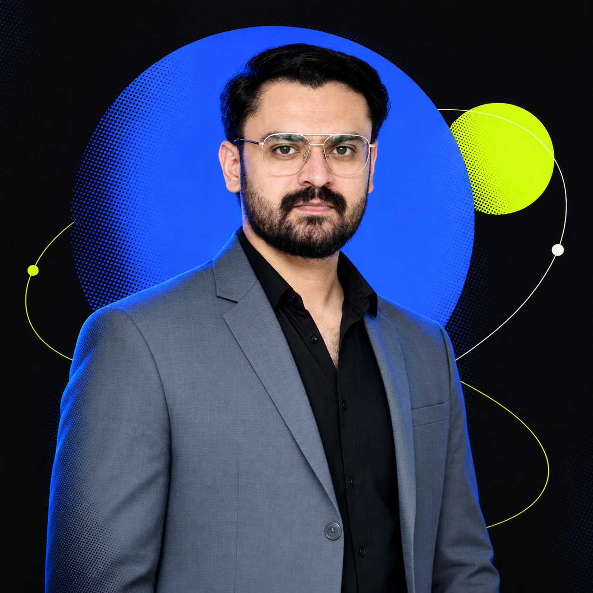

NomadCut
Product strategy · AI UX · Mobile interaction

Selected work
Design process
Good products emerge when insight, structure and craft move together. I use a focused process that keeps every decision tied to the people using the product.
Turn scattered input into a clear problem worth solving.
Map the journey, remove friction and make the next step obvious.
Prototype, test and sharpen the details until the experience feels natural.
Where I add value
From the first question to the final interaction, each layer should support one clear experience.
Framing the problem, understanding context and finding the strongest opportunity.
Flows and information structures that make complex products easier to navigate.
Consistent visual languages that stay useful as products grow.
Interactive ideas that make feedback concrete before expensive decisions are made.
Design principles
Visual craft has more impact when the product already makes sense.
Reduce effort without hiding the depth people need to do real work.
Design patterns that stay coherent through new features, states and teams.
Interaction lab
Small experiments in feedback, rhythm and responsive motion.
Motion should explain change, direct attention and reward action.
Every tap deserves an immediate, understandable response.
Shared rules create consistency without making every screen identical.
How I work
I care about the thinking behind the pixels: understanding people, framing the right problem and shaping interfaces that make the next step feel natural.
Have a product in mind?
Contact details will be added here soon.